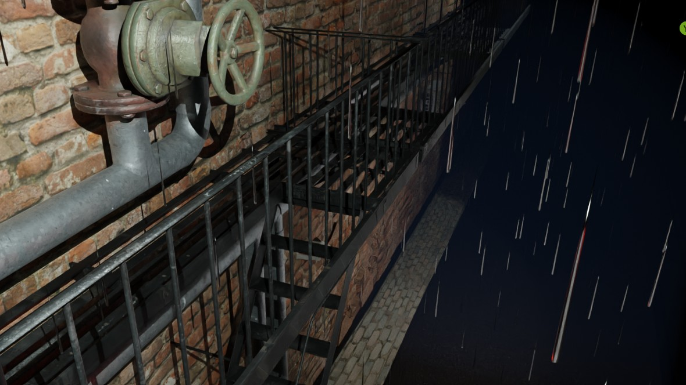
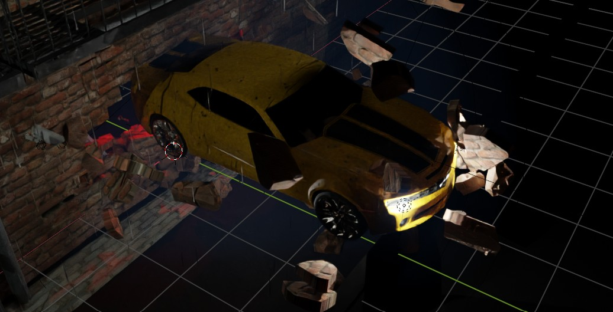
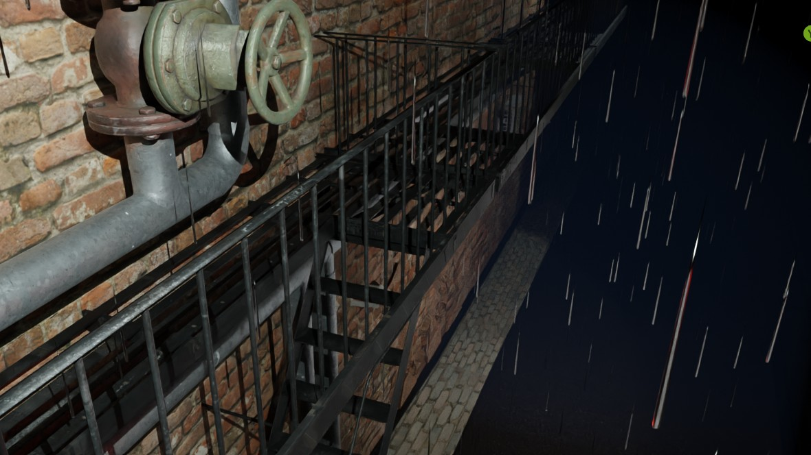
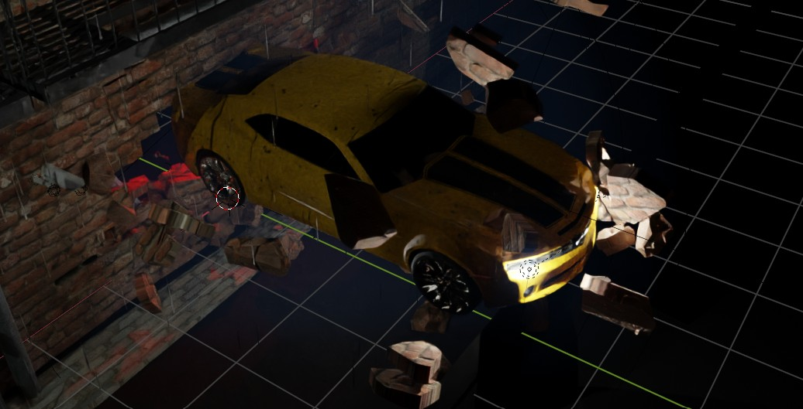
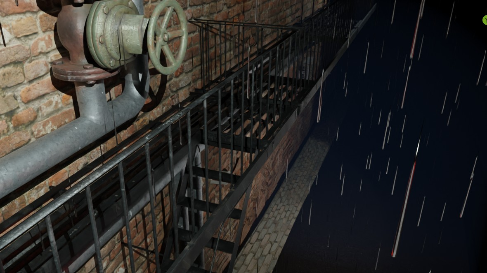
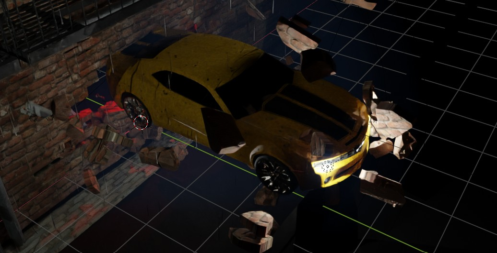

CAR VISUAL
都市の速度と光の粒を切り裂く一瞬
CONCEPT
都市を高速で駆け抜ける車の「質量感」と「光の軌跡」を軸に制作した映像作品。 車体反射の処理、動きに追従する光、レンズのにじみなどを丁寧に調整しています。
TECHNIQUE
Blender によるライティング、モーションブラー、道路反射の制御がポイント。 カメラワークは速度感を生かすために一部手ブレを加えています。
GALLERY
 



都市の速度と光の粒を切り裂く一瞬
都市を高速で駆け抜ける車の「質量感」と「光の軌跡」を軸に制作した映像作品。 車体反射の処理、動きに追従する光、レンズのにじみなどを丁寧に調整しています。
Blender によるライティング、モーションブラー、道路反射の制御がポイント。 カメラワークは速度感を生かすために一部手ブレを加えています。

